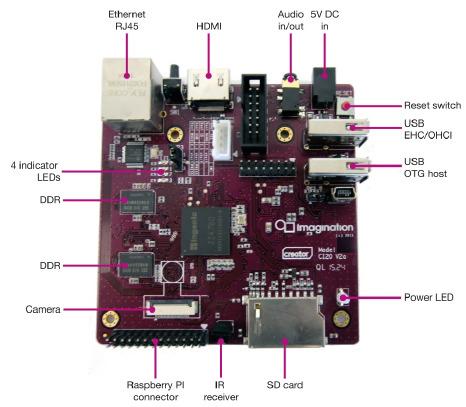

MIPS Creator CI20

The MIPS Creator CI20 V2.0
Supported Features
Single 1.2GHz MIPS32 processor
256MiB DRAM
UART0 on Raspberry PI connector
Fast Ethernet (DM9000)
Configurations
Important
U-Boot must be properly configured for networking (e.g., valid ipaddr,
serverip, and ethaddr environment variables) to fetch the image over TFTP.
NuttX is loaded via U-Boot using TFTP (replace <tftp_dir> with your local
TFTP root directory).
You can use the following command to configure the NuttX build:
./tools/configure.sh -l ci20/nsh
make CROSSDEV=mips-mti-elf-
mkimage -A mips -O linux -T kernel -C none -a 0x80000180 -e 0x800004ac \
-n "nx" -d nuttx.bin <tftp_dir>/nuttx.umg
Run this from U-Boot prompt:
tftp nuttx.umg && bootm $fileaddr
nsh
Basic serial console access to the NSH shell.
Note
Connect USB cable from your PC to UART0 pins on the Raspberry PI connector.
Then use some serial console client (minicom, picocom, teraterm, etc) configured to 115200 8n1 without software or hardware flow control.
net
Basic serial console access to the NSH shell.
Networking support through the RJ45 connector.
The telnet daemon is included, so the CI20 board can be connected to through telnet.